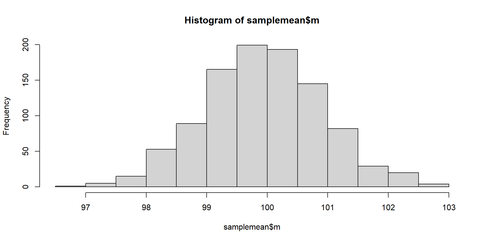

[1] 100.40612024-03-12
Today we will discuss meta-analysis as a statistical technique to synthesize results from different studies.
The main aim of a meta-analysis is to assess the evidence as presented across a number of similar studies. This assessment can help us establish whether there is a true effect, especially in the case of conflicting findings.
As mentioned in, Field, A. P., & Gillett, R. (2010). How to do a meta‐analysis. British Journal of Mathematical and Statistical Psychology, 63(3), 665-694.
Actually plenty of other strenghts …
Actually plenty of other limitations …
In practice, all of the above steps require extensive reading and clear decision making based on sound understanding of your research field and the statistics behind effect sizes and meta-analysis.
Today we will start from step 5. Collate statistical findings, calculate effect sizes.
Effect Size
Quite often, the effect size is reported and can be directly extracted, not always though. In order to perform a meta-analysis we need effect sizes and we have to choose wisely as they can affect our results.
For more details you can see Higgins, Julian, James Thomas, Jacqueline Chandler, Miranda Cumpston, Tianjing Li, Matthew J Page, and Vivian A Welch. 2019. Cochrane Handbook for Systematic Reviews of Interventions. John Wiley & Sons.
You most probably have come across the term effect size in the past, in general terms it is a metric of the magnitude of the difference or relationship between variables. A larger effect size denotes a more meaningful difference/relationship between variables. If we consider two arithmetic means \(\bar{x}_1\) and \(\bar{x}_2\) then we can use Cohen’s d effect size.
Cohen’s d
\(d = \frac{{\bar{x}_1 - \bar{x}_2}}{{s_p}}\)
where
\(\bar{x}_1\) and \(\bar{x}_2\) are the mean of the two groups, and \(s_p\) is the pooled standard deviation defined as:
\(s_p = \sqrt{\frac{{(n_1 - 1)s_1^2 + (n_2 - 1)s_2^2}}{{n_1 + n_2 - 2}}}\)
Do not be misguided by the word effect. There is no suggestion of causality hence you should not interpret it as such. Instead, you should treat effect size with caution.
Also, keep in mind that we will be working with measures of central tendency, so we need to be cautious and not automatically label everything as effect size. Furthermore, our observed effect size \(\hat{\theta}_1\) from a study 1 is only an estimate of the true effect size \(\theta\). Therefore, it is subdue to sampling error:
\(\hat{\theta}_i= {\theta}_i + {\epsilon}_i\)
We can now repeat this process 1,000 times and calculate the standard deviation of this sampling distribution. This is our standard error of the mean.
\(SE=\frac{s}{\sqrt{n}}\)
We can observe that the two values are similar but not quite the same.
\(SE=\frac{s}{\sqrt{n}}\) We can also see that our value will depend on the sample size \(n\). The larger our sample size, the larger our denominator will be, hence the smaller our standard error.
samplemean2 <- data.frame(n=1:999, m=1:999,se=1:999)
for (i in 2:1000) {
sample1 <- rnorm(n=i, mean = 100, sd = 15)
samplemean2$n[i-1] <- i
samplemean2$m[i-1] <- mean(sample1)
samplemean2$se[i-1] <- sd(sample1)/sqrt(i)
}
library(ggplot2)
ggplot(samplemean2, aes(x=n, y=m))+
geom_line()+
labs(x = "Sample Size")+
labs(y = "Mean")What are the implications of these two plots on the Cohen’s d?
\(d = \frac{{\bar{x}_1 - \bar{x}_2}}{{s_p}}\)
\(s_p = \sqrt{\frac{{(n_1 - 1)s_1^2 + (n_2 - 1)s_2^2}}{{n_1 + n_2 - 2}}}\)
Required figures: sample size, mean, and standard deviation of each study
Besides arithmetic means as measures of central tendency we may also work with paradigms using proportions. In order to calculate a proportion we need to divide the number of observation \(j\) that have a characteristic by the total sample size \(n\)
\(p=\frac{j}{n}\)
\(SE_p=\sqrt{\frac{p(1-p)}{n}}\)
Let us see a basic example. We have sample of 250 observations with 100 of them exhibiting a specific behaviour.
Proportions can be problematic in terms of standard error as they can only vary between 0 and 1. Can you think of the reason why?
In order to avoid this limitation we logit-transform proportions after we calculate the odds. The formulae for this process are:
\(p_{logit}=log_e(\frac{p}{1-p})\)
\(SE_{plogit}=\sqrt{{\frac{1}{np}}+\frac{1}{n(1-p)}}\)
Required figures: Sample size and the number of observations with a specific characteristic
The correlation expresses the amount of covariance between two variables, the most commonly used is the Pearson correlation (for continuous variables).
\(r_{xy}=\frac{\sigma^2_{xy}}{\sigma_x\sigma_y}\)
\(SE_{r_{xy}}=\frac{1-r^2_{xy}}{\sqrt{n-2}}\)
Reminder 1: this is a standardized score which means we can immediately compare correlations between variables that are not necessarily on the same scale.
Reminder 2: correlations are scores that naturally vary between -1 and 1. Does this bring in mind any potential problems?
\(z=0.5log_e(\frac{1+r}{1-r})\)
\(SE_z=\frac{1}{\sqrt{n-3}}\)
Required figures: correlation coefficient and sample size
Next week we will present more cases experimental designs and how we can calculate SE and effect sizes. Furthermore, we will discuss how we can correct our effect sizes to account for systematic biases such as small sizes.
Typically in statistical models we work with either fixed-effect or random-effect models.
Fixed-effect models assume that all the effect sizes in our studies are derived from a homogeneous population with a fixed effect size. This means that our sample effect sizes are also homogeneous.
Random-effect models assume our population effect size varies randomly between our studies, therefore we should not assume that our sample sizes are homogeneous.
In practice, fixed-effect models have one error term and random-effect models have two error terms.
In our fixed-effect model our observed effect size in all studies deviates from the true effect size due to sampling error.
\(\hat{\theta}_i= \theta + {\epsilon}_i\)
In our random-effect model our study’s observed effect size deviates from our study’s true effect size due to sampling error.
\(\hat{\theta}_i= \theta_i + {\epsilon}_i\)
There is however a second error, that of our study’s true effect size deviating from the overarching distribution of effect sizes with a mean score of \(\mu\)
\(\theta_i= \mu + {\zeta}_i\)
Therefore, our study’s effect size deviates from the overall \(\mu\) by two error terms.
\(\hat{\theta}_i= \mu + {\zeta}_i+ {\epsilon}_i\)
The exchangeability assumption in random-effects model dictates that our \({\zeta}_i\) error from the superpopulation mean \(\mu\) should be independent of \(i\). In other words, we cannot know in advance if \({\zeta}_i\) in one study is going to be larger or smaller that the \({\zeta}_j\) in another study. What does this mean for the true effect sizes for each of the study?
Well as usual I have the perfect answer for you, can you guess it?
You can get more information on the debate on which method is more suitable for different cases here:
https://journals.sagepub.com/doi/10.1177/25152459221120427
Other authors also suggest that random-effects should be the go-to approach:
Assuming we decided to go for the random-effects model approach it instantly becomes apparent that we are facing the challenge of accounting for the \({\zeta}_i\) error.
We will address this by estimating the variance of the distribution of true effect sizes, also known as \(\tau^2\) (tau-squared).
There are multiple estimators that you can use, DerSimonian-Laird ("DL"), Restricted Maximum Likelihood ("REML"), Maximum Likelihood ("ML"), Empirical Bayes ("EB"), The Sidik-Jonkman ("SJ") are only some examples.
For more information you can read:
As a rule of thumb, if you have continuous outcomes you can use maximum likelihood.
If you are concerned that you have very high heterogeneity you can use Sidik-Jonkman
It has also been suggested that DerSimonian-Laird allows for more reproducible findings. This is because this estimator uses a formula contrary to ML that uses an iterative algorithm.
We will be mainly using metafor although you can also use meta if you want.
We will also use metadat package that has datasets for education purposes specifically for meta-analysis.
There are also other packages which I have not used so I will be quite limited in supporting you with other packages.
authors year ni ri controls design a_measure
1 Axelsson et al. 2009 109 0.187 none cross-sectional self-report
2 Axelsson et al. 2011 749 0.162 none cross-sectional self-report
3 Bruce et al. 2010 55 0.340 none prospective other
4 Christensen et al. 1999 107 0.320 none cross-sectional self-report
5 Christensen & Smith 1995 72 0.270 none prospective other
6 Cohen et al. 2004 65 0.000 none prospective other
c_measure meanage quality
1 other 22.00 1
2 NEO 53.59 1
3 NEO 43.36 2
4 other 41.70 1
5 NEO 46.39 2
6 NEO 41.20 2 authors year ni ri controls design id
1 Axelsson et al. 2009 109 0.187 none cross-sectional 1
2 Axelsson et al. 2011 749 0.162 none cross-sectional 2
3 Bruce et al. 2010 55 0.340 none prospective 3
4 Christensen et al. 1999 107 0.320 none cross-sectional 4
5 Christensen & Smith 1995 72 0.270 none prospective 5
6 Cohen et al. 2004 65 0.000 none prospective 6We will transform to FIscher’s \(z\)
authors year ni ri controls design id yi vi
1 Axelsson et al. 2009 109 0.187 none cross-sectional 1 0.1892 0.0094
2 Axelsson et al. 2011 749 0.162 none cross-sectional 2 0.1634 0.0013
3 Bruce et al. 2010 55 0.340 none prospective 3 0.3541 0.0192
4 Christensen et al. 1999 107 0.320 none cross-sectional 4 0.3316 0.0096
5 Christensen & Smith 1995 72 0.270 none prospective 5 0.2769 0.0145
6 Cohen et al. 2004 65 0.000 none prospective 6 0.0000 0.0161
Random-Effects Model (k = 16; tau^2 estimator: REML)
tau^2 (estimated amount of total heterogeneity): 0.0081 (SE = 0.0055)
tau (square root of estimated tau^2 value): 0.0901
I^2 (total heterogeneity / total variability): 61.73%
H^2 (total variability / sampling variability): 2.61
Test for Heterogeneity:
Q(df = 15) = 38.1595, p-val = 0.0009
Model Results:
estimate se zval pval ci.lb ci.ub
0.1499 0.0316 4.7501 <.0001 0.0881 0.2118 ***
---
Signif. codes: 0 '***' 0.001 '**' 0.01 '*' 0.05 '.' 0.1 ' ' 1
rstudent dffits cook.d cov.r tau2.del QE.del hat
Axelsson et al.,2009 0.2918 0.0485 0.0025 1.1331 0.0091 37.7109 0.0568
Axelsson et al.,2011 0.1196 -0.0031 0.0000 1.2595 0.0100 36.7672 0.1054
Bruce et al.,2010 1.2740 0.2595 0.0660 0.9942 0.0075 35.3930 0.0364
Christensen et al.,1999 1.4711 0.3946 0.1439 0.9544 0.0068 33.5886 0.0562
Christensen & Smith,1995 0.8622 0.1838 0.0339 1.0505 0.0082 36.5396 0.0441
Cohen et al.,2004 -0.9795 -0.2121 0.0455 1.0639 0.0084 37.1703 0.0411
Dobbels et al.,2005 0.2177 0.0296 0.0010 1.1740 0.0094 37.6797 0.0714
Ediger et al.,2007 -0.9774 -0.3120 0.1001 1.1215 0.0084 36.1484 0.0889
Insel et al.,2006 0.7264 0.1392 0.0195 1.0561 0.0083 37.0495 0.0379
Jerant et al.,2011 -1.8667 -0.5861 0.2198 0.8502 0.0047 25.0661 0.1058
Moran et al.,1997 -1.4985 -0.2771 0.0756 1.0073 0.0077 35.6617 0.0369
O'Cleirigh et al.,2007 1.8776 0.4918 0.2148 0.8819 0.0059 31.9021 0.0511
Penedo et al.,2003 -1.1892 -0.2939 0.0859 1.0550 0.0080 36.3291 0.0587
Quine et al.,2012 -0.0020 -0.0423 0.0021 1.2524 0.0100 37.7339 0.0998
Stilley et al.,2004 0.8066 0.2126 0.0459 1.0907 0.0083 35.8385 0.0684
Wiebe & Christensen,1997 -0.7160 -0.1656 0.0280 1.0853 0.0087 37.7017 0.0411
weight dfbs inf
Axelsson et al.,2009 5.6776 0.0481
Axelsson et al.,2011 10.5396 -0.0032
Bruce et al.,2010 3.6432 0.2623
Christensen et al.,1999 5.6195 0.3994
Christensen & Smith,1995 4.4069 0.1837
Cohen et al.,2004 4.1094 -0.2112
Dobbels et al.,2005 7.1362 0.0296
Ediger et al.,2007 8.8886 -0.3128
Insel et al.,2006 3.7886 0.1387
Jerant et al.,2011 10.5826 -0.5430
Moran et al.,1997 3.6922 -0.2791
O'Cleirigh et al.,2007 5.1150 0.5059
Penedo et al.,2003 5.8732 -0.2941
Quine et al.,2012 9.9778 -0.0434
Stilley et al.,2004 6.8403 0.2125
Wiebe & Christensen,1997 4.1094 -0.1642